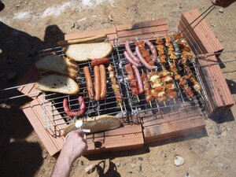
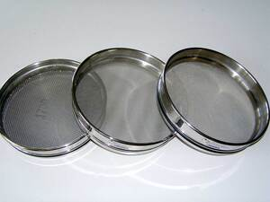

ⲭⲏⲣⲉ (CO 459), ⲭⲉⲣⲉ (BP 9421), ⲭⲉⲣⲁ (J 70 40, Ep 340), ⲭⲏⲣⲁ (AZ 16 17) S, ⲭⲉⲣⲁ B nn f, ploughshare: K 126 ϯⲭ. سكة; ib 129 gridiron or sieve used by cook مصفاة، مشبكة. In S in lists of utensils, tools. Coptic ?
(noun female)
tool
ploughshare
gridiron or sieve used by cook
In S in lists of utensils, tools.
Coptic?
gridiron or sieve used by cook
In S in lists of utensils, tools.
Coptic?


1: ploughshare, 2: gridiron, 3: sieve
complete
516b
See also:
| view | ⲥⲟⲗϥ, ⲥⲟⲣϥ, ⲥⲟⲗⲓⲃ, ⲥⲱⲗϥ S | (noun male) sieve [κοσκινον]1413 |
| view | ϣⲟⲗϣⲗ S ϣⲉⲗϣⲉⲗ B ϣ(ⲉ)ⲗϣⲱⲗ⸗, ϣ(ⲉ)ⲗϣⲱⲗ†, ϣⲣϣⲱⲣ† S | (verb) tr: shake in sieve, sift [σινιαζειν]
as nn, shaking [σεισμα]1909 |
| view | ⲟⲃϩⲉ, ⲟⲃϩ S ⲁⲃϩⲉ A ⲁⲃⲁϩ, ⲁⲃϩ F | (noun female) tooth
― of man [οδους] ― of animals hoe, ploughshare889 |
| view | ⲥⲓⲛⲉ SA ⲥⲏⲓⲛⲓ B | (noun female) ploughshare [αροτρον]1437 |
| view | ⲥⲕⲁⲓ S ⲥⲕⲉⲓ ALF ⲥⲭⲁⲓ B ⲥⲕⲁⲉⲓ NH ⲥⲉⲕ-, ⲥⲟⲕ⸗ S ⲥⲭⲏⲧ⸗ B | (verb) intr: plough [αροτριαν]1388 |